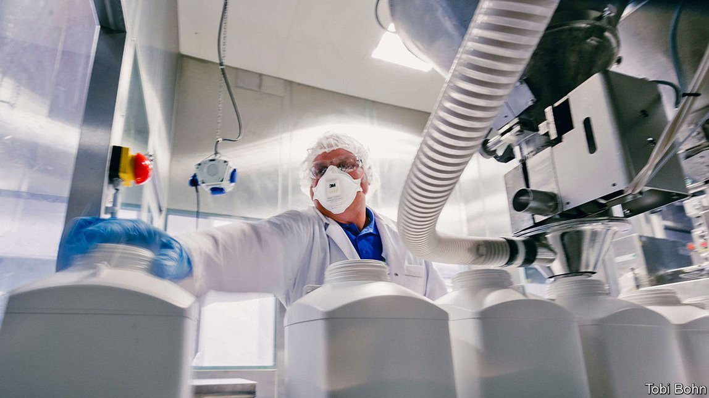
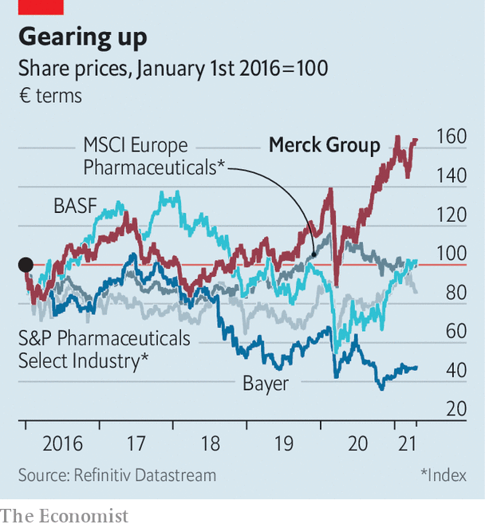
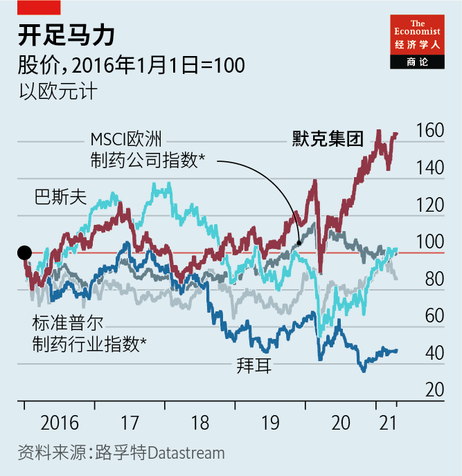

2021-05-10T14:28:35+00:00
Lab life
实验室生活
實驗室生活
Can Merck’s new boss maintain the drugmaker’s winning streak?
默克的新老板能保持公司的连胜势头吗?
默克的新老闆能保持公司的連勝勢頭嗎?
Belén Garijo takes over as chief executive in May
葛丽鹤于5月出任首席执行官
葛麗鶴於5月出任首席執行官
FEW COMPANIES have a history as long and interesting as Merck. Founded in 1668 by Friedrich Jacob Merck as a pharmacy in Darmstadt, the world’s oldest apothecary has survived several European wars, two world wars and the Nazi regime. In 1917 America’s government confiscated its American subsidiary under the Trading with the Enemy Act. It has operated as a rival business, based in New Jersey but, confusingly, also named Merck, ever since.
很少有公司的历史像默克这样悠久又有趣。它成立于1668年，当时弗雷德里克·雅各布·默克（Friedrich Jacob Merck）在达姆施塔特（Darmstadt）开了一家药房，之后这家世界上最古老的药剂商挺过了几次欧洲战争、两次世界大战和纳粹的统治。1917年，美国政府依照《与敌国贸易法》（Trading with the Enemy Act）将默克在美国的子公司没收充公。自那以后它成了原母公司的竞争对手，总部设在新泽西，但保留了原来的名字，让人很容易混淆。
很少有公司的歷史像默克這樣悠久又有趣。它成立於1668年，當時弗雷德里克·雅各布·默克（Friedrich Jacob Merck）在達姆施塔特（Darmstadt）開了一家藥房，之後這家世界上最古老的藥劑商挺過了幾次歐洲戰爭、兩次世界大戰和納粹的統治。1917年，美國政府依照《與敵國貿易法》（Trading with the Enemy Act）將默克在美國的子公司沒收充公。自那以後它成了原母公司的競爭對手，總部設在新澤西，但保留了原來的名字，讓人很容易混淆。
Belén Garijo, the no-nonsense 60-year-old Spaniard who will take over as Merck’s chief executive on May 1st, says she is keenly aware of her company’s heritage and its unique ownership structure. Fully 70% of the company is still in the hands of the 13th generation of Mercks (the rest is owned by public investors). And it was at the family’s instigation that Stefan Oschmann, the outgoing CEO, and Ms Garijo, his deputy, transformed Merck through a series of bold acquisitions from a drugmaker living off legacy medicines into a conglomerate that makes gear and chemicals for biotechnology labs as well as pharmaceuticals. “Diversification is strength,” insists Ms Garijo, who herself embodies diversity, becoming only the second woman ever to head a firm in the DAX 30 index of Germany’s bluest chips.
现年60岁、朴实干练的西班牙人葛丽鹤（Belén Garijo）将于5月1日接任德国默克的首席执行官，她说自己对这家公司的传统及其独特的所有权结构了如指掌。该公司足足70%的股份仍掌握在第13代默克家族的手中（其余由公众投资者持有）。正是在这个家族的发起下，即将离任的首席执行官欧思明（Stefan Oschmann）和他的副手葛丽鹤通过一系列大胆的收购，将默克从一家靠卖传统药剂为生的制药商转变成了为生物技术实验室和制药公司生产设备和化学品的企业集团。“多元化就是实力。”葛丽鹤强调。她本人就是多元化的体现，她是有史以来执掌德国最优蓝筹股DAX30指数公司的仅仅第二位女性。
現年60歲、樸實幹練的西班牙人葛麗鶴（Belén Garijo）將於5月1日接任德國默克的首席執行官，她說自己對這家公司的傳統及其獨特的所有權結構了如指掌。該公司足足70%的股份仍掌握在第13代默克家族的手中（其餘由公眾投資者持有）。正是在這個家族的發起下，即將離任的首席執行官歐思明（Stefan Oschmann）和他的副手葛麗鶴通過一系列大膽的收購，將默克從一家靠賣傳統藥劑為生的製藥商轉變成了為生物技術實驗室和製藥公司生產設備和化學品的企業集團。“多元化就是實力。”葛麗鶴強調。她本人就是多元化的體現，她是有史以來執掌德國最優藍籌股DAX30指數公司的僅僅第二位女性。
Investors applauded the strategic shift under Mr Oschmann (see chart). Merck’s market value increased from €36bn ($41bn) in 2016 when he took the helm to €63bn, more than Bayer, another big German drugmaker, which has almost twice as many employees as Merck, and nearly as much as BASF, a chemicals giant. Last year the group’s revenues rose by 9% to €17.5bn; net profit shot up by 51% to €2bn.
投资者对欧思明治下的战略转型拍手叫好（见图表）。默克的市值从2016年欧思明上任时的360亿欧元（410亿美元）升至630亿欧元，超过另一家德国大型制药商拜耳（而拜耳的员工数量几乎是默克的两倍），与化工巨头巴斯夫（BASF）相当。去年默克的收入增长了9%，达到175亿欧元；净利润飙升51%，达到20亿欧元。
投資者對歐思明治下的戰略轉型拍手叫好（見圖表）。默克的市值從2016年歐思明上任時的360億歐元（410億美元）升至630億歐元，超過另一家德國大型製藥商拜耳（而拜耳的員工數量幾乎是默克的兩倍），與化工巨頭巴斯夫（BASF）相當。去年默克的收入增長了9%，達到175億歐元；凈利潤飆升51%，達到20億歐元。
The most immediate task for Ms Garijo is to manage a shake-up of the executive suite. The company is installing new heads of drugmaking, research and development, and the American pharmaceuticals business. It is also looking for a new head of the lab division; Udit Batra, who used to run it, left after Ms Garijo pipped him to the top job last year.
对葛丽鹤来说，首当其冲的任务是处理好高层人事变动。公司正在为制药、研发和美国制药业务等部门安排新负责人。它也在寻找实验室部门的新负责人；去年，负责该部门的吴博达（Udit Batra）在不敌葛丽鹤、无缘最高职位后离开了公司。
對葛麗鶴來說，首當其衝的任務是處理好高層人事變動。公司正在為製藥、研發和美國製藥業務等部門安排新負責人。它也在尋找實驗室部門的新負責人；去年，負責該部門的吳博達（Udit Batra）在不敵葛麗鶴、無緣最高職位後離開了公司。
The new boss must also ensure that the commercial potential of the course charted by her predecessor is realised, says Matthew Weston of Credit Suisse, a bank. Some big bets appear to have disappointed. Bintrafusp alfa, a drug to fight lung cancer that is in the late stages of development, did not show any benefit over a rival drug in trials. Only two other drugs are close to potential clinical use, a lung-cancer treatment and one to fight multiple sclerosis. In 2020 sales of the medicines business edged down by 1%.
这位新老板还得确保由其前任划定的路线将实现商业潜力，瑞士信贷银行的马修·韦斯顿（Matthew Weston）说。一些大赌注似乎已经让人失望了。治疗晚期肺癌的药物Bintrafusp alfa在临床试验中没有显现出相比一种对照药物的任何优势。目前只有另外两种药物有可能接近临床应用，一种用于治疗肺癌，另一种用于多发性硬化症。2020年，药品业务的销售额小幅下降了1%。
這位新老闆還得確保由其前任劃定的路線將實現商業潛力，瑞士信貸銀行的馬修·韋斯頓（Matthew Weston）說。一些大賭注似乎已經讓人失望了。治療晚期肺癌的藥物Bintrafusp alfa在臨床試驗中沒有顯現出相比一種對照藥物的任何優勢。目前只有另外兩種藥物有可能接近臨床應用，一種用於治療肺癌，另一種用於多發性硬化症。2020年，藥品業務的銷售額小幅下降了1%。
In the pandemic year this was handily offset by the strong performance of Merck’s lab division, which has become the firm’s biggest arm. Its sales increased by nearly 10% to €7.5bn in 2020. In February Merck announced that it will significantly accelerate the supply of the fatty bubbles needed to make the Pfizer-BioNTech vaccine against covid-19. Few companies in the world are able to produce these custom lipids in large quantities for vaccine production. The company has also said it will invest in production capacity for disposable plastic materials for bioreactors, another essential ingredient for makers of covid-19 vaccines.
在新冠肺炎肆虐的一年里，这点降幅被默克实验室部门的强劲表现轻松抵消，该部门已经成为默克最大的一支。2020年该部门销售额增长了近10%，达到75亿欧元。今年2月，默克宣布将大幅度加快供应生产辉瑞-BioNTech联合开发的新冠疫苗所需的脂质体。全球能大量生产这些用于疫苗生产的定制脂质体的公司寥寥无几。默克还表示将投资生产用于制造一次性生物反应器的塑料材料，生物反应器也是新冠疫苗制造商必需的物料。
在新冠肺炎肆虐的一年裡，這點降幅被默克實驗室部門的強勁表現輕鬆抵消，該部門已經成為默克最大的一支。2020年該部門銷售額增長了近10%，達到75億歐元。今年2月，默克宣布將大幅度加快供應生產輝瑞-BioNTech聯合開發的新冠疫苗所需的脂質體。全球能大量生產這些用於疫苗生產的定製脂質體的公司寥寥無幾。默克還表示將投資生產用於製造一次性生物反應器的塑料材料，生物反應器也是新冠疫苗製造商必需的物料。
The lab business should continue to thrive once the pandemic abates, thinks Mr Weston. That will let Ms Garijo focus on medicines, which as former head of the pharma division she is well placed to do. Mr Oschmann will be a tough act to follow—but not an impossible one. ■
韦斯顿认为，实验室业务在疫情平息后应该会继续繁荣。这让葛丽鹤能专注于药品，而作为制药部门的前负责人，她在这一领域更是得心应手。欧思明的成就的确让继任者难以望其项背，但也并非全然不可企及。
韋斯頓認為，實驗室業務在疫情平息後應該會繼續繁榮。這讓葛麗鶴能專註於藥品，而作為製藥部門的前負責人，她在這一領域更是得心應手。歐思明的成就的確讓繼任者難以望其項背，但也並非全然不可企及。